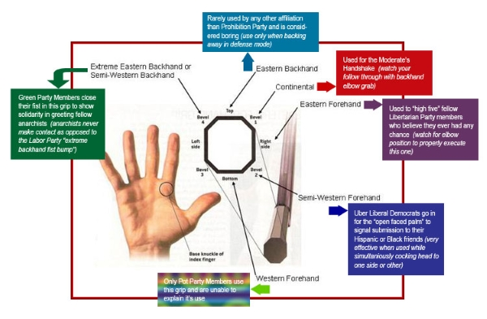
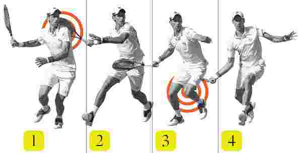
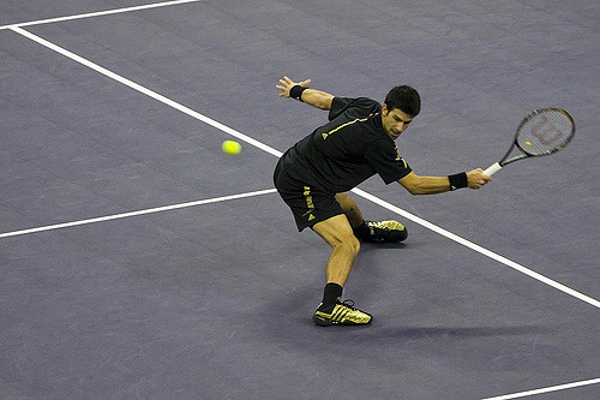
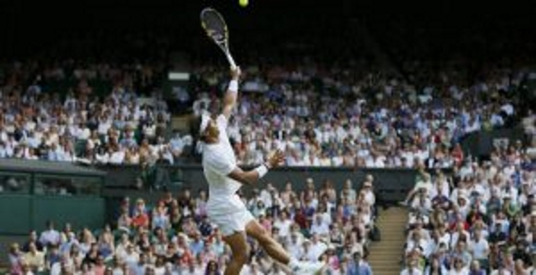
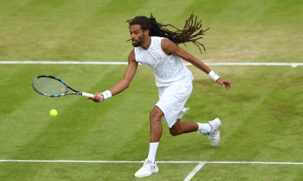
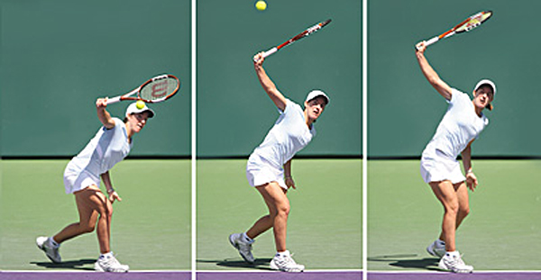

A competent tennis player has eight basic shots in his or her repertoire: the serve, forehand, backhand, volley, half-volley, overhead smash, drop shot, and lob.
Put the mouse on it.
A grip is a way of holding the racket in order to hit shots during a match. The grip affects the angle of the racket face when it hits the ball and influences the pace, spin, and placement of the shot. Players use various grips during play, including the Continental (The "Handshake Grip"), Eastern (Can be either semi-eastern or full eastern. Usually used for backhands.), and Western (semi-western or full western, usually for forehand grips) grips. Most players change grips during a match depending on what shot they are hitting; for example, slice shots and serves call for a Continental grip.
A serve (or, more formally, a "service") in tennis is a shot to start a point. The serve is initiated by tossing the
ball into the air and hitting it (usually near the apex of its trajectory) into the diagonally opposite service box
without touching the net. The serve may be hit under- or overhand although underhand serving remains a rarity. If
the ball hits the net on the first serve and bounces over into the correct diagonal box then it is called a "let"
and the server gets two more additional serves to get it in. There can also be a let if the server second serve,
then they get one more try to get the serve in the box.
Experienced players strive to master the conventional overhand serve to maximize its power and placement. The server
may employ different types of serve including flat serve, topspin serve, slice serve, and kick (American twist) serve.
A reverse type of spin serve is hit in a manner that spins the ball opposite the natural spin of the server, the
spin direction depending upon right- or left-handedness. If the ball is spinning counterclockwise, it will curve
right from the hitter's point of view and curve left if spinning clockwise.
Some servers are content to use the serve simply to initiate the point; however, advanced players often try to hit
a winning shot with their serve. A winning serve that is not touched by the opponent is called an "ace".

For a right-handed player, the forehand is a stroke that begins on the right side of the body, continues across the body as contact is made with the ball, and ends on the left side of the body. There are various grips for executing the forehand, and their popularity has fluctuated over the years. The most important ones are the continental, the eastern, the semi-western, and the western. For a number of years, the small, frail 1920s player Bill Johnston was considered by many to have had the best forehand of all time, a stroke that he hit shoulder-high using a western grip. Few top players used the western grip after the 1920s, but in the latter part of the 20th century, as shot-making techniques and equipment changed radically, the western forehand made a strong comeback and is now used by many modern players. No matter which grip is used, most forehands are generally executed with one hand holding the racket, but there have been fine players with two-handed forehands. In the 1940s and 50s, the Ecuadorian/American player Pancho Segura used a two-handed forehand to achieve a devastating effect against larger, more powerful players. Players such as Monica Seles or France's Fabrice Santoro and Marion Bartoli are also notable players known for their two-handed forehands.
For right-handed players, the backhand is a stroke that begins on the left side of their body, continues across their
body as contact is made with the ball, and ends on the right side of their body. It can be executed with either one
hand or with both and is generally considered more difficult to master than the forehand. For most of the 20th century,
the backhand was performed with one hand, using either an eastern or a continental grip. The first notable players
to use two hands were the 1930s Australians Vivian McGrath and John Bromwich, but they were lonely exceptions. The
two-handed grip gained popularity in the 1970s as Björn Borg, Chris Evert, Jimmy Connors, and later Mats Wilander
and Marat Safin used it to great effect, and it is now used by a large number of the world's best players, including
Rafael Nadal and Serena Williams.
Two hands give the player more control, while one hand can generate a slice shot, applying backspin on the ball
to produce a low trajectory bounce. Reach is also limited with the two-handed shot. The player long considered to
have had the best backhand of all time, Don Budge, had a powerful one-handed stroke in the 1930s and 1940s that imparted
topspin onto the ball. Ken Rosewall, another player noted for his one-handed backhand, used a very accurate slice
backhand through the 1950s and 1960s. A small number of players, notably Monica Seles, use two hands on both the
backhand and forehand sides.
A volley is a shot returned to the opponent in mid-air before the ball bounces, generally performed near the net, and
is usually made with a stiff-wristed punching motion to hit the ball into an open area of the opponent's court. The
half volley is made by hitting the ball on the rise just after it has bounced, also generally in the vicinity of
the net, and played with the racket close to the ground.[78] The swinging volley is hit out of the air as the player
approaches the net. It is an offensive shot used to take preparation time away from the opponent, as it returns the
ball into the opponent's court much faster than a standard volley.
From a poor defensive position on the baseline, the lob can be used as either an offensive or defensive weapon,
hitting the ball high and deep into the opponent's court to either enable the lobber to get into better defensive
position or to win the point outright by hitting it over the opponent's head. If the lob is not hit deeply enough
into the other court, however, an opponent near the net may then hit an overhead smash, a hard, serve-like shot,
to try to end the point.
A difficult shot in tennis is the return of an attempted lob over the backhand side of a player. When the contact
point is higher than the reach of a two-handed backhand, most players will try to execute a high slice (under the
ball or sideways). Fewer players attempt the backhand sky-hook or smash. Rarely, a player will go for a high topspin
backhand, while themselves in the air. A successful execution of any of these alternatives requires balance and timing,
with less margin of error than the lower contact point backhands, since this shot is a break in the regular pattern
of play.
If an opponent is deep in his court, a player may suddenly employ an unexpected drop shot, by softly tapping the
ball just over the net so that the opponent is unable to run in fast enough to retrieve it. Advanced players will
often apply back spin to a drop shot, causing the ball to "skid" upon landing and bounce sideways, with less forward
momentum toward their opponent, or even backwards towards the net, thus making it even more difficult to return.
volley
half-volley
overhead smash
drop shot
lob